带上 10 岁的小探险家，中秋清晨从北京直飞贵阳 ——
溶洞、瀑布、天眼、碧水、苗寨灯火，8 天慢游贵州
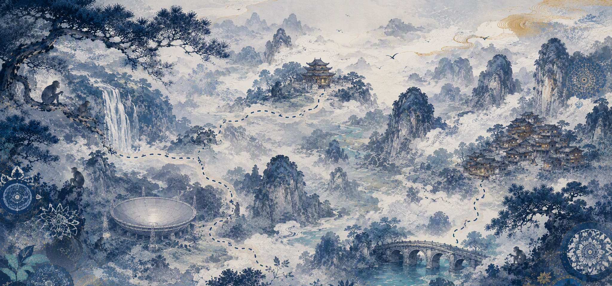
贵阳D1–D2 · 黔灵山 / 织金洞 黄果树D2–D3 · 大瀑布 平塘天眼D4 · FAST 荔波小七孔D5–D6 西江苗寨D7 · 万家灯火中秋当天出发，选 10 点前起飞的航班、中午抵达贵阳，下午正好玩黔灵山。节假日机票越晚越贵，尽早出票；两大一小留意儿童票规则。
实名分时预约、无线下窗口，提前 1–15 天可约。旺季门票 110 + 观光车 20 = 130 元/人，中小学生免门票只需观光车票。
国庆当晚苗寨最贵最紧俏。优先选观景台/半山、提供行李接送的民宿 —— 寨子沿山坡而建，鹅卵石台阶拖箱子会爬断腿。具体推荐见每天卡片底部的「住哪里」。
门票提前 1–15 天实名预约，每日限流 5 万；水帘洞单独限流、节假日提前 5–7 天抢。娃（6–17 岁）免门票，只买 50 元观光车。
沪昆高铁直达约 2 小时，二等座约 ¥250/人，同样 15 天预售。凯里南是小站、直达票源少，抢不到就备选：凯里南 → 怀化南 → 娄底南中转，或回贵阳北 → 娄底南（票源更多）。
公园免费但需实名预约，2026 年 5 月起统一走贵客荟小程序。
提前 3–5 天分时实名预约，每日限流约 1–1.5 万；学生免门票只买 40 元观光车，带好学生证/户口本。
天眼至少提前 1 天实名预约；租车选 SUV，9/26 贵阳取、10/2 凯里南还（一嗨/神州等支持异地还车，下单时确认凯里南网点和异地还车费），并确认是否需要儿童安全座椅。
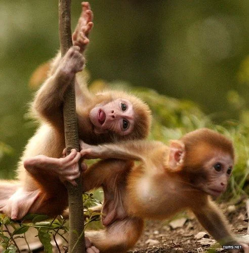
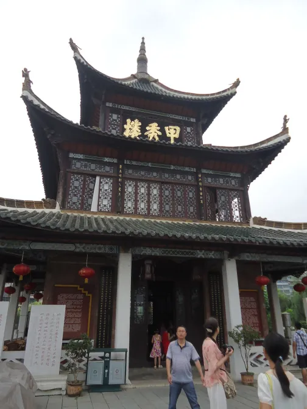
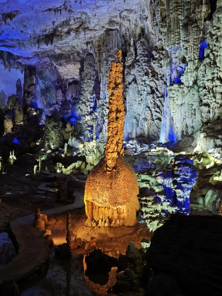
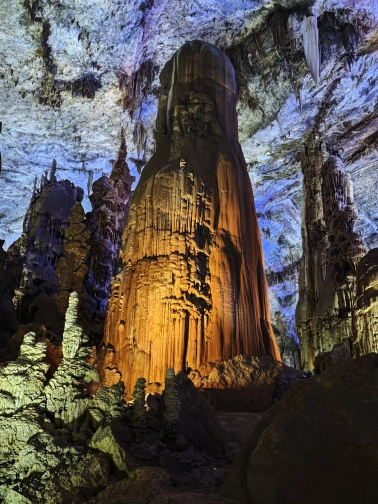
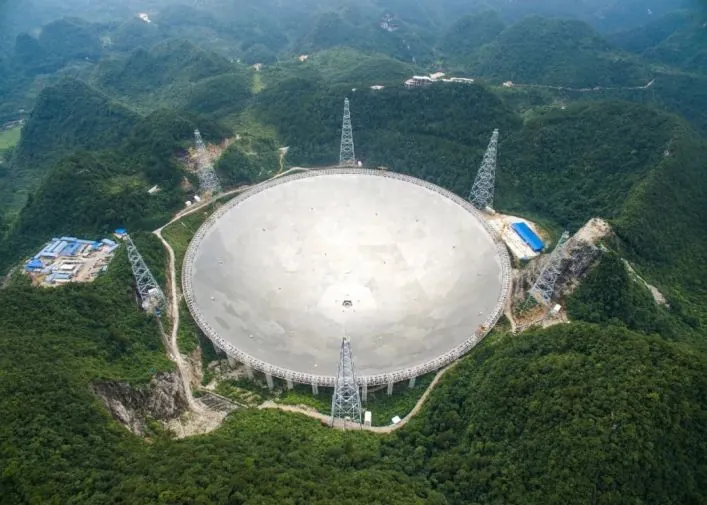
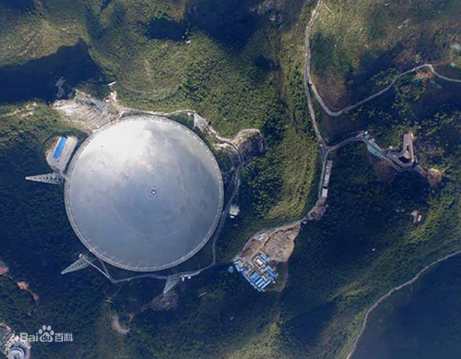
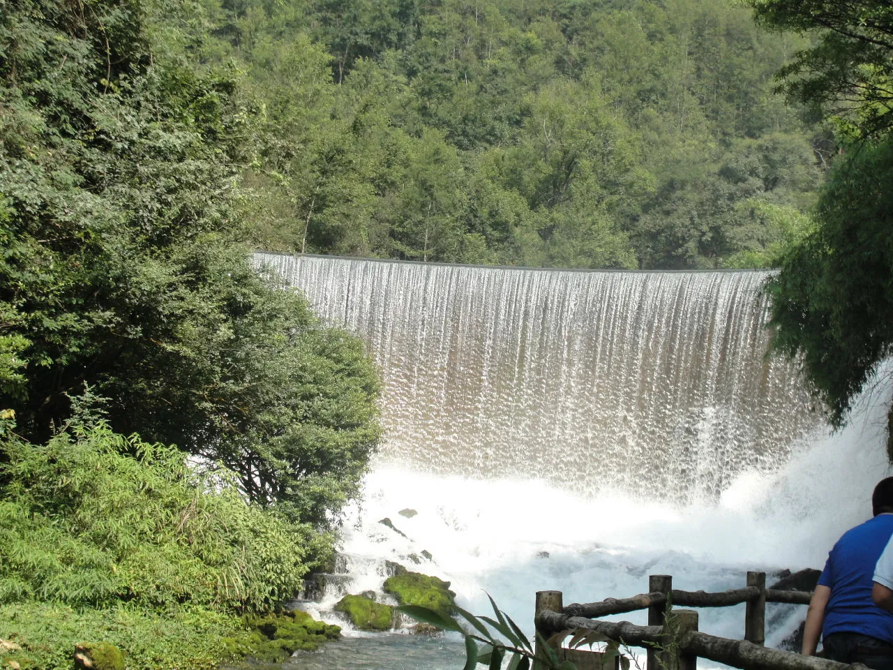
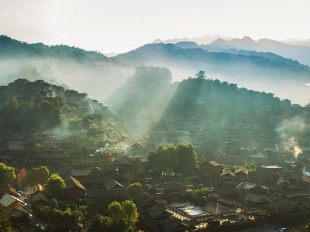
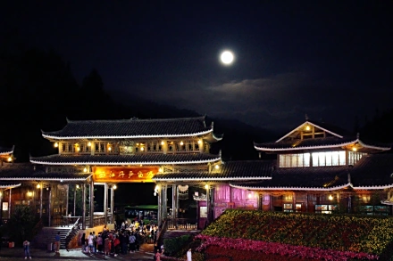
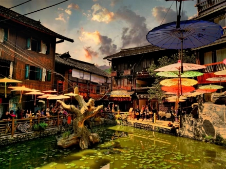
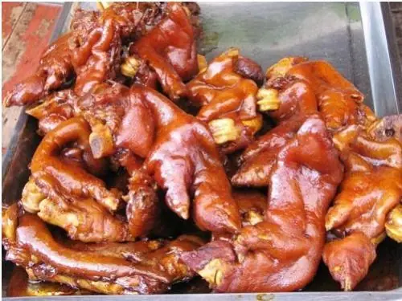
状元蹄，十余种香料卤制，软糯酱香，贵阳市区也能吃到
不辣 · 娃超爱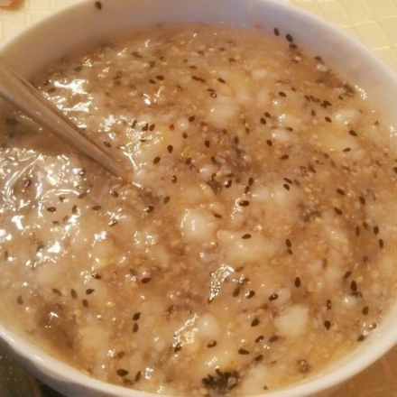
现蒸米糕加玫瑰糖，甜而不膩
甜品 · 放心吃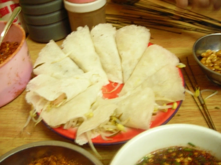
素菜丝卷薄饼，蘸水选酸汤不辣版
清爽 · 免辣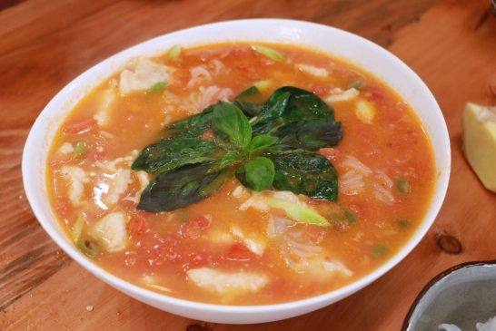
白酸汤/番茄酸汤本身不辣，鱼肉鲜嫩
提前说免辣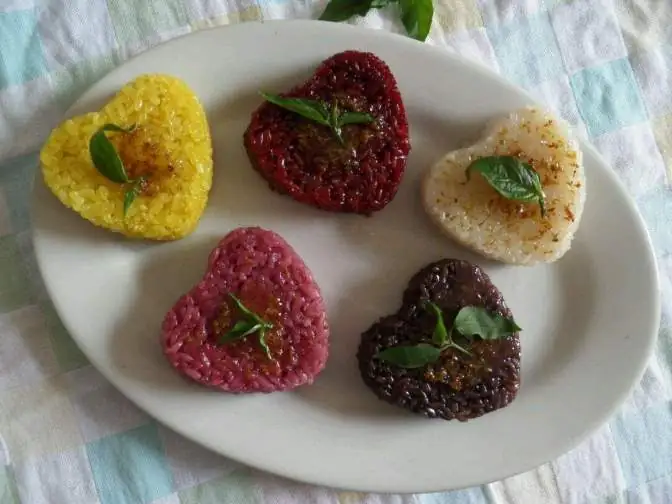
布依族植物染色糯米饭，好看又好吃
不辣 · 颜值高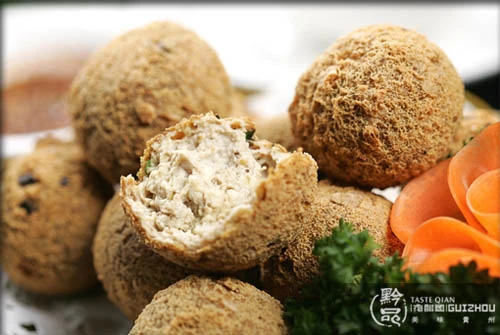
外酥里嫩，辣椒蘸料让店家分开放
蘸料另放